User Guide¶
Interrater reliability¶
There are  strata (in this case, each stratum is a video). There are 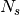
items in stratum
strata (in this case, each stratum is a video). There are 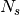
items in stratum  (in this case, an item is corresponds to a 30-second
snippet of the video). There are 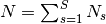 items in all.
(in this case, an item is corresponds to a 30-second
snippet of the video). There are 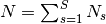 items in all.
There are  non-exclusive categories to which each of the
non-exclusive categories to which each of the  items might
belong; an item might belong to none of the categories (the categories are
types of behavior that a child might exhibit in the 30-second snippet of
video). That is, each item might be “labeled” with any of the 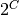 subsets
of the labels, including the empty set.
items might
belong; an item might belong to none of the categories (the categories are
types of behavior that a child might exhibit in the 30-second snippet of
video). That is, each item might be “labeled” with any of the 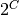 subsets
of the labels, including the empty set.
There are  “raters,” each of whom labels each of the items with zero
or more elements of .
“raters,” each of whom labels each of the items with zero
or more elements of .
Define 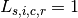, if rater  assigns label
assigns label  to item
to item  in stratum
; and 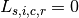 if not.
in stratum
; and 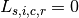 if not.
We observe 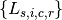 for ; 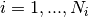; 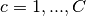; and 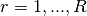.
We want to know whether the categorizations are “reliable,” in the sense that
agreement among the raters is higher than would be expected “by chance.” The
reliability of each category is of interest, rather than an overall rating
for all categories.
- permute.irr.compute_ts(ratings)[source]¶
Compute the test statistic
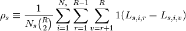
Parameters: ratings: array_like
Input array of dimension [R, Ns] Each row corresponds to the ratings given by a single rater; columns correspond to items rated.
Returns: rho_s: float
concordance of the ratings, where perfect concordance is 1.0
- permute.irr.simulate_ts_dist(ratings, obs_ts=None, iter=10000, keep_dist=False)[source]¶
Simulates the permutation distribution of the irr test statistic for a matrix of ratings <ratings>
If obs_ts is not null, computes the reference value of the test statistic before the first permutation. Otherwise, uses the value obs_ts for comparison.
If <keep_dist>, return the distribution of values of the test statistic; otherwise, return only the number of permutations for which the value of the irr test statistic is at least as large as obs_ts.
Parameters: ratings : array_like
Input array of dimension [R, Ns]
obs_ts : float
if None, obs_ts is calculated as the value of the test statistic for the original data
iter : integer
number of random permutation of the elements of each row of ratings
keep_dist : bool
flag for whether to store and return the array of values of the irr test statistic
Returns: out : {obs_ts, geq, iter, dist}
obs_ts : observed value of the test statistic for the input data, or the input value
of obs_ts if obs_ts was given as input
geq : number of iterations for which the test statistic was greater than or equal to
obs_ts
iter : iter
dist : if <keep_dist>, the array of values of the irr test statistic from the iter
iterations. Otherwise, null.